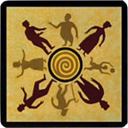
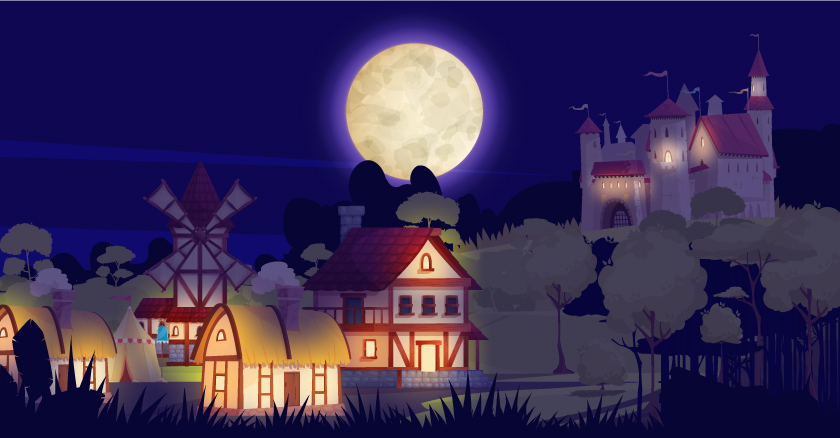
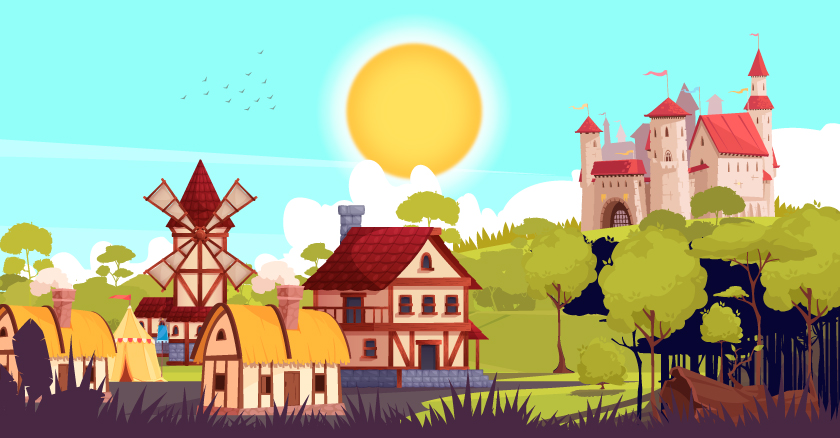

Renseignez votre pseudo :
Commencer la partie

Liste des joueurs :
 
Bienvenue dans le village de Thiercelieux
Premier amoureux
Second amoureux
Qui choisis-tu de protéger cette nuit ?
Qui veux-tu manger cette nuit ?
Souhaites-tu sauver cette personne :
OUI
NON
Choisis la personne que tu veux tuer :
Le rôle de quelle personne souhaites tu regarder ?
Tu as été tué injustement ! Choisis celui que tu emporteras avec toi dans la tombe !
Les votes commencent vous avez :
2:00
Pour qui souhaites tu voter aujourd'hui ?